<!DOCTYPE html>
<html lang="ml">
<head>
  <meta charset="utf-8">
  <meta name="viewport" content="width=device-width, initial-scale=1.0">
  <title>Chapter 1 (Pages 7-26) - Class 3 Basic_science</title>
  <style>

:root {
  --bg-color: #fcfcfd;
  --card-bg: #ffffff;
  --text-color: #1e293b;
  --text-muted: #64748b;
  --primary-color: #0284c7;
  --primary-light: #e0f2fe;
  --border-color: #e2e8f0;
  --radius: 10px;
  --shadow: 0 4px 6px -1px rgb(0 0 0 / 0.05), 0 2px 4px -2px rgb(0 0 0 / 0.05);
}

body {
  font-family: -apple-system, BlinkMacSystemFont, "Segoe UI", Roboto, "Noto Sans Malayalam", "Manjari", "Gayathri", sans-serif;
  background-color: var(--bg-color);
  color: var(--text-color);
  line-height: 1.8;
  font-size: 1.1rem;
  margin: 0;
  padding: 0;
}

.container {
  max-width: 860px;
  margin: 0 auto;
  padding: 2.5rem 1.5rem 5rem 1.5rem;
}

header {
  margin-bottom: 2.5rem;
  padding-bottom: 1.5rem;
  border-bottom: 2px solid var(--border-color);
}

.badge-row {
  display: flex;
  gap: 0.5rem;
  margin-bottom: 0.75rem;
  flex-wrap: wrap;
}

.badge {
  display: inline-block;
  font-size: 0.75rem;
  font-weight: 700;
  text-transform: uppercase;
  letter-spacing: 0.05em;
  padding: 0.25rem 0.65rem;
  border-radius: 9999px;
  background: var(--primary-light);
  color: var(--primary-color);
}

.badge-medium {
  background: #fef3c7;
  color: #b45309;
}

.badge-class {
  background: #dcfce7;
  color: #15803d;
}

h1 {
  font-size: 2.1rem;
  font-weight: 800;
  margin: 0.5rem 0 1rem 0;
  line-height: 1.3;
  color: #0f172a;
}

.nav-bar {
  display: flex;
  justify-content: space-between;
  margin: 1.5rem 0;
  font-size: 0.95rem;
  flex-wrap: wrap;
  gap: 0.5rem;
}

.nav-bar a {
  color: var(--primary-color);
  text-decoration: none;
  font-weight: 600;
  padding: 0.5rem 1rem;
  border-radius: var(--radius);
  background: var(--card-bg);
  border: 1px solid var(--border-color);
  transition: all 0.2s ease;
}

.nav-bar a:hover {
  background: var(--primary-light);
  border-color: var(--primary-color);
}

.nav-bar .disabled {
  color: var(--text-muted);
  pointer-events: none;
  border-color: transparent;
  background: transparent;
}

.page-section {
  background: var(--card-bg);
  border: 1px solid var(--border-color);
  border-radius: var(--radius);
  box-shadow: var(--shadow);
  padding: 2rem;
  margin-bottom: 2.5rem;
}

.page-header {
  display: flex;
  align-items: center;
  justify-content: space-between;
  margin-bottom: 1.25rem;
  padding-bottom: 0.5rem;
  border-bottom: 1px dashed var(--border-color);
}

.page-number {
  font-size: 0.8rem;
  font-weight: 700;
  text-transform: uppercase;
  color: var(--text-muted);
  letter-spacing: 0.05em;
}

.page-content p {
  margin: 0 0 1.25rem 0;
  white-space: pre-wrap;
  word-break: break-word;
}

.page-content p:last-child {
  margin-bottom: 0;
}

.diagram-card {
  margin: 2rem 0;
  text-align: center;
  background: #f8fafc;
  border: 1px solid var(--border-color);
  border-radius: var(--radius);
  padding: 1rem;
  overflow: hidden;
}

.diagram-card img {
  max-width: 100%;
  height: auto;
  border-radius: calc(var(--radius) - 4px);
  display: inline-block;
  box-shadow: 0 2px 4px rgba(0,0,0,0.04);
}

.diagram-card figcaption {
  font-size: 0.85rem;
  color: var(--text-muted);
  margin-top: 0.75rem;
  font-weight: 500;
}

footer {
  margin-top: 3rem;
  padding-top: 2rem;
  border-top: 2px solid var(--border-color);
}

  </style>
</head>
<body>
  <div class="container">
    <header>
      <div class="badge-row">
        <span class="badge badge-class">Class 3</span>
        <span class="badge badge-medium">Malayalam Medium</span>
        <span class="badge">Basic science</span>
        <span class="badge">Part 1</span>
      </div>
      <h1>Chapter 1 (Pages 7-26)</h1>
      <div class="nav-bar"><span class="nav-bar disabled"></span><a href="index.html">☰ Index</a><a href="part_1_chapter_02.html">Chapter 2 (Pages 27-46) →</a></div>
    </header>
    <main>
      <section class="page-section" id="page-7">
  <div class="page-header"><span class="page-number">Page 7</span></div>
  <figure class="diagram-card" id="fig_ch01_p007_01">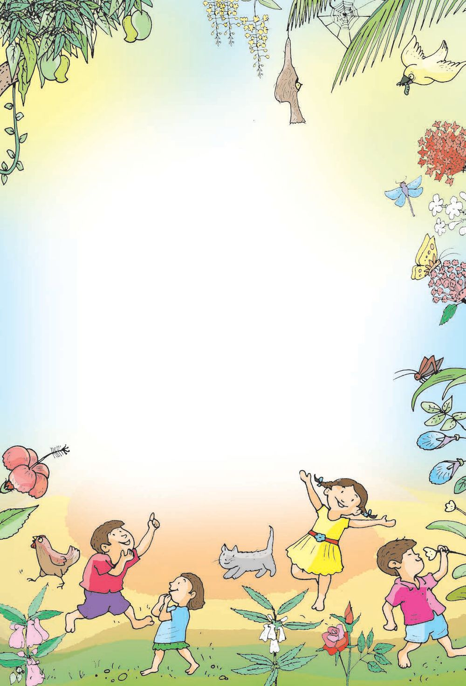<figcaption>Figure fig_ch01_p007_01 (Page 7)</figcaption></figure>
  <figure class="diagram-card" id="fig_ch01_p007_02"><figcaption>Figure fig_ch01_p007_02 (Page 7)</figcaption></figure>
  <div class="page-content">
    <p>1</p>
    <p>—Ž›‚‹žŒ›
¡‚šĞ“š £ˆÿ›‘›¢
¡‚ƭÚc¡‚ƭÚc¡‚ƭÚc‚šŽš
ŒšŒŽc¡‚šĞ“š£ˆÿ›‘›¢
s›‘›¡‚šĞŒŽ¢Œ‚§?
ŒŽŒ‚›Ä¢ˆ¡ŽŦ§?
“¡‚¢ųš¡x¡‚¢ųšˆš¢Œš?
¡‚ƭÚc¡‚ƭÚc¡‚ƭÚc‚šŽš
ˆž¡“šų ¡‚šĞ“š£ˆÿ›‘›¢
s›‘›¡‚šĞˆž¢“‚§?
ˆž“›¡ź¢ˆ¡ŽŦ§?
ˆž“‚›Ä†›¡ŒŦ§ ˆš¢Œš?
¡‚ƭÚc¡‚ƭÚc¡‚ƭÚc‚šŽš
g¡šų ¡‚š š
Н“š£ˆÿ›‘›¢
s›‘›¡‚šĞg¢‚§?
g‚›Ä¢ˆ¡ŽŦ§?
g‚ųšÕ‚› ˆš¢Œš?</p>
  </div>
</section><section class="page-section" id="page-8">
  <div class="page-header"><span class="page-number">Page 8</span></div>
  <figure class="diagram-card" id="fig_ch01_p008_01">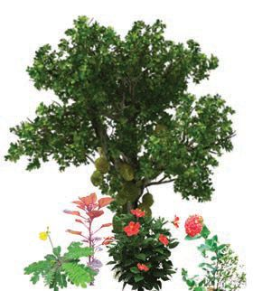<figcaption>Figure fig_ch01_p008_01 (Page 8)</figcaption></figure>
  <figure class="diagram-card" id="fig_ch01_p008_02"><figcaption>Figure fig_ch01_p008_02 (Page 8)</figcaption></figure>
  <figure class="diagram-card" id="fig_ch01_p008_03">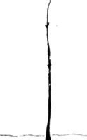<figcaption>Figure fig_ch01_p008_03 (Page 8)</figcaption></figure>
  <figure class="diagram-card" id="fig_ch01_p008_04"><figcaption>Figure fig_ch01_p008_04 (Page 8)</figcaption></figure>
  <div class="page-content">
    <p>ˆšĞˆš}›Ú‘›ÚųsĞ›s¡‘†›āÇsĬ›¢Ƽ
hs‘› †ŒÚcs‘›ăš¢š?
s‘›ă¢ƀšÇ n¡‚Ƽǰ –
––DZā¡‘¡‚š}šÄ e“–Žc‹›ă?
g‚¢ˆš¡n¡‚Ƽǰ –
––DZāÇ †›āÇڏ›ǰ?
m¡źˆŽ›–Žˆ~†ˆǘsĹ›Æ m’‚ž</p>
    <p>n¡‚ƽDZ ‹šuāÇ?
£– ¡x}›¡} x›Ņc “ŽƩsš§ x›ŅĹ›Æ †
g†›c
n¡‚Ƽǰ ‹šuāÇ “Žă¢xÅښ†Ĭ§? x›Ņc ˆžÅśšÚ›
‹šuāÇ n¡‚ų§ m’‚›¢ăÅڞ.
 ¢“Ž§</p>
    <p>z
z</p>
    <p>––DZ‹šuā‘¡}
ŒǮ¢ˆŽsÇ
ˆŽ›x¡ƀ}šc</p>
    <p>z</p>
    <p>‚Ĭ§Ìsšįc
gÌ ˆŅc
¢“Ž§ ÌŒžc</p>
    <p>‚Žc‚›Ž›ÚDZ
†›āÇڏ›š“ų mƼš –
––DZā‘c pŽ¢ˆš¡š¢š?
m¡ŦƼšŒš§“DZ‚DZš–āÇ?
“ƀc</p>
    <p>z
z
z
z</p>
    <p>8</p>
  </div>
</section><section class="page-section" id="page-9">
  <div class="page-header"><span class="page-number">Page 9</span></div>
  <figure class="diagram-card" id="fig_ch01_p009_01">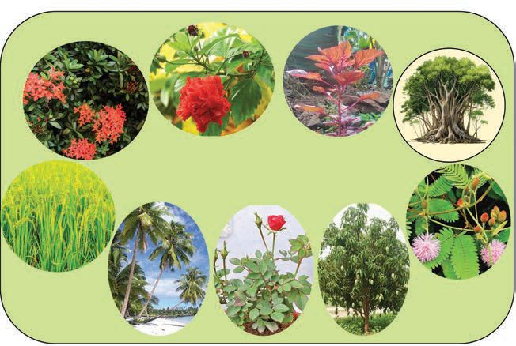<figcaption>Figure fig_ch01_p009_01 (Page 9)</figcaption></figure>
  <figure class="diagram-card" id="fig_ch01_p009_02"><figcaption>Figure fig_ch01_p009_02 (Page 9)</figcaption></figure>
  <div class="page-content">
    <p>x›ŅĹ›Æ n¡‚Ƽǰ –
––DZā‘š§†›āÇsšų‚§ ? g“¡}
‚Ĭs‘¡}–“›¢”•‚sÇ m¡ŦƼšŒš§?
“ƀĹ›Æ m¡ŦƼǰ“DZ‚DZš–ā‘Ĭ§ ?
g“mŅsšc†› †
†›Æڝų?
†›ā‘¡}†›ŽœäāÇ ˆĞ› 
s›Æ }›s§ (9)¡xƭž
ǗžÇ£z“£““› DZi„DZš†Ĺ›ǫ –
Ç
––DZāÇ †›Žœä›ă§ ˆĞ›s
ˆžÅśšÚž</p>
    <p>xœŽ
¡xƠŽĹ›
Œš“§</p>
    <p>9</p>
    <p>9
9</p>
    <p>“‘¡Ž
e ›sc
“Å•
āÇ</p>
    <p>9
9</p>
    <p>9</p>
    <p>“Å•
āÇ</p>
    <p>9
9</p>
    <p>9</p>
    <p>†› †
†›Æڝų
sšc
Œš–āÇ</p>
    <p>“‚§</p>
    <p>g}Ŏc</p>
    <p>¡x‚§</p>
    <p>“ƀc
“‘¡Ž
sš~›†DZ
Œǫ‚§</p>
    <p>Œǫ‚§</p>
    <p>sš~›†DZ</p>
    <p>––DZc</p>
    <p>Ɯ„“š‚§</p>
    <p>‚Ĭ§</p>
    <p>9</p>
  </div>
</section><section class="page-section" id="page-10">
  <div class="page-header"><span class="page-number">Page 10</span></div>
  <figure class="diagram-card" id="fig_ch01_p010_01">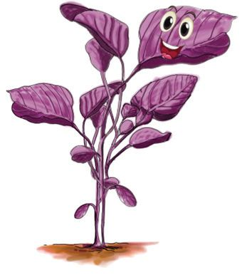<figcaption>Figure fig_ch01_p010_01 (Page 10)</figcaption></figure>
  <figure class="diagram-card" id="fig_ch01_p010_02">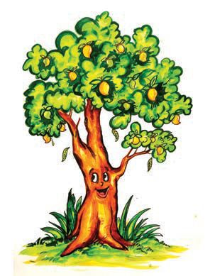<figcaption>Figure fig_ch01_p010_02 (Page 10)</figcaption></figure>
  <figure class="diagram-card" id="fig_ch01_p010_03"><figcaption>Figure fig_ch01_p010_03 (Page 10)</figcaption></figure>
  <figure class="diagram-card" id="fig_ch01_p010_04"><figcaption>Figure fig_ch01_p010_04 (Page 10)</figcaption></figure>
  <div class="page-content">
    <p>ˆĞ› 
s›Æ†›ų§ m¡ŦƼǰŒ†Ǡ›š›?
–“›¢”•‚sÇچ–Ž›ă§ –
––DZā¡‘‚Žc‚›Ž›ă›Ž›Úų‚›¡†ƀǮ›
xœŽc Œš“c¡xƠŽĹ›c ˆų¡‚Ŧš¡ų§NJŗ›Úž
m¡ųc m¡ź
sžĞsš¡Žc q• ›sÇ
mųš§ ‘
“›‘›Ús |ā‘¡}
Ƃ¢‚DZs‚sÇ m’‚ž
z‚Ĭ§ Ɯ„“š§

z f’Ĺ›Æ¢“¢ŽšĞŒ›Ƽ</p>
    <p>“‘¡ŽiŽĹ›Æ“‘Žų
|ā¡‘e››¢Ƽ?
|ā‘š§ŒŽāÇ
|ā‘¡}Ƃ¢‚DZs‚sÇ
sž}› m’‚ž
 “‘¡Žsš~›†DZŒǫ‚Ĭ§</p>
    <p>z</p>
    <p></p>
    <p>‚ĬsÇÚ§s}ƀŒ¡Ĭÿ›c
|ā‘c¡x›
¡x}›s‘š¢ |ā¡‘
sǮ›¡ă}›sÇ mųš§
“›‘›Úų‚§ |ā‘¡}
‘
Ƃ¢‚DZs‚sÇ m’‚ž
 sĞ›ǫ‚Ĭ§</p>
    <p>z</p>
    <p>
10</p>
  </div>
</section><section class="page-section" id="page-11">
  <div class="page-header"><span class="page-number">Page 11</span></div>
  <figure class="diagram-card" id="fig_ch01_p011_01">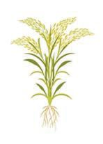<figcaption>Figure fig_ch01_p011_01 (Page 11)</figcaption></figure>
  <figure class="diagram-card" id="fig_ch01_p011_02"><figcaption>Figure fig_ch01_p011_02 (Page 11)</figcaption></figure>
  <figure class="diagram-card" id="fig_ch01_p011_03"><figcaption>Figure fig_ch01_p011_03 (Page 11)</figcaption></figure>
  <figure class="diagram-card" id="fig_ch01_p011_04"><figcaption>Figure fig_ch01_p011_04 (Page 11)</figcaption></figure>
  <figure class="diagram-card" id="fig_ch01_p011_05"><figcaption>Figure fig_ch01_p011_05 (Page 11)</figcaption></figure>
  <figure class="diagram-card" id="fig_ch01_p011_06"><figcaption>Figure fig_ch01_p011_06 (Page 11)</figcaption></figure>
  <figure class="diagram-card" id="fig_ch01_p011_07"><figcaption>Figure fig_ch01_p011_07 (Page 11)</figcaption></figure>
  <figure class="diagram-card" id="fig_ch01_p011_08"><figcaption>Figure fig_ch01_p011_08 (Page 11)</figcaption></figure>
  <figure class="diagram-card" id="fig_ch01_p011_09"><figcaption>Figure fig_ch01_p011_09 (Page 11)</figcaption></figure>
  <div class="page-content">
    <p>xœŽ¡xƠŽĹ› Œš“§mų›“¡}sžĞĹ›Æ¡ƀĞ“Å f¡ŽƼšŒš›
Ž›Úc? ˆĞ›sˆžÅśšÚž</p>
    <p>q• ›sÇ</p>
    <p>sǯ›¡ă}›sÇ</p>
    <p>ŒŽāÇ</p>
    <p>xœŽ</p>
    <p>¡xƠŽĹ›</p>
    <p>Œš“§</p>
    <p>¢xÅŝ“ŽƩž</p>
    <p>sǮ›¡ă}›sÇ
q• ›sÇ</p>
    <p>ŒŽāÇ</p>
    <p>11</p>
  </div>
</section><section class="page-section" id="page-12">
  <div class="page-header"><span class="page-number">Page 12</span></div>
  <figure class="diagram-card" id="fig_ch01_p012_01"><figcaption>Figure fig_ch01_p012_01 (Page 12)</figcaption></figure>
  <figure class="diagram-card" id="fig_ch01_p012_02"><figcaption>Figure fig_ch01_p012_02 (Page 12)</figcaption></figure>
  <figure class="diagram-card" id="fig_ch01_p012_03"><figcaption>Figure fig_ch01_p012_03 (Page 12)</figcaption></figure>
  <figure class="diagram-card" id="fig_ch01_p012_04"><figcaption>Figure fig_ch01_p012_04 (Page 12)</figcaption></figure>
  <figure class="diagram-card" id="fig_ch01_p012_05"><figcaption>Figure fig_ch01_p012_05 (Page 12)</figcaption></figure>
  <figure class="diagram-card" id="fig_ch01_p012_06"><figcaption>Figure fig_ch01_p012_06 (Page 12)</figcaption></figure>
  <div class="page-content">
    <p>“Ǭ›¡ă}›sÇ
sžĞsš¢Ž
ž 
|āÇ
“ǫ›¡ă}›sÇ
|ā‘c
g“›¡}¢Ĭ</p>
    <p>m¡ŦƼšŒš§ h –
––DZā‘¡}Ƃ¢‚DZs‚sÇ?
m’‚›¢†šÚž
z “ǫ›s‘š› ˆ}Žų
 †›“Åų †›Æ Ä
ښÄs’››Ƽ</p>
    <p>z
z
z</p>
    <p>ˆŽ›–Žc †›Žœä›ă§ “ǫ›¡ă}›sÇÚ§ sž}‚Æ i„š—ŽāÇ
Ž
s¡Ĭś¡’‚ž
“ǫ›¡ă}› Ç
sÇŽĬ‚ŽŒĬ§
†›Ĺ ˆ}Åų“‘Žų“c‚šā›Æ ˆǮ›ƀ›}›¢ăš
ˆ}Å¢ųšŒs‘›¢Ú“‘Žų“c</p>
    <p>––DzāÇzĹ›c
zĹ›Æ“‘Žų
––DZā‘š§
–
z––DZāÇ
–
mŦš§ h –
––DZā‘¡}
Ƃ¢‚DZs‚sÇ?
m’‚›¢†šÚž
sž}‚Æz –
––DZāÇ
s¡Ĭś m’‚ž</p>
    <p>12</p>
  </div>
</section><section class="page-section" id="page-13">
  <div class="page-header"><span class="page-number">Page 13</span></div>
  <figure class="diagram-card" id="fig_ch01_p013_01"><figcaption>Figure fig_ch01_p013_01 (Page 13)</figcaption></figure>
  <figure class="diagram-card" id="fig_ch01_p013_02">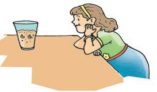<figcaption>Figure fig_ch01_p013_02 (Page 13)</figcaption></figure>
  <figure class="diagram-card" id="fig_ch01_p013_03"><figcaption>Figure fig_ch01_p013_03 (Page 13)</figcaption></figure>
  <div class="page-content">
    <p>“›Ĺ›†Ǭ›¡ zœ“Ä
—š§¡“‘›ăc
|šÄŒĴ›†§
Œs‘›¡Ĺ›</p>
    <p>“›Ĺ§Œ‘ă“Žų‚§
†›āÇsĬ›Ğ¢Ĭš?
†ŒÚc“›Ĺ§
Œ‘ƀ›Úǰ</p>
    <p>–‚šŽDZŒšpŽ –
øš–›ÆŒÆ†›ƩsŒž¢ųš†š¢šˆÅ
“›ĹsÇ Œ›Æ eƹc ‚š’§Ĺ› øš–›¢†š}§ ¢xÅų ‹šuŧ
“ƩsŒÆ ††Ʃs “›Ĺ§Œ‘ă“Žų‚§ †›Žœä›Úž m¡ŦƼǰ
ŒšǮā‘š§sššÄs’›ų‚§?
“›Ĺ›Æ†›ų§ f„DZc Œ‘ă“Žų‚§
Ĺ
n‚‹šuŒš›Ž›Úc?
f„DZ¡Ĺ g“ŽšÄ mŅ „›“–¡Œ}
ڝc?
†›Žœä›ă§ s¡Ĭ՝sÇ sžĞsšŽŒš› xÅă¡xƪ§ m¡ź
ˆŽ›–Žˆ~†ˆǘsĹ›Æ m’‚žx›Ņ“c“Žă ¢xÅڞ
Ž</p>
    <p>|š†cm¡ź¡x}›c
†›ā‘¡} Ž
ˆŽ›–ŽĹ§ pŽ “›Ĺ§ Œ‘ƀ›ă§ “‘Åś ¢†šÚs
¡“‘›ăŒǫ›}ŧ¢“c “›Ĺ§ †}šÄ “›Ĺ§Œ‘ă§
¡x}›“‘Ž¢ƠšÇ
›
f“”DZś†§ “‘“c †Æsc ––DZśÆ sž}‚Æ gsÇ
“Žų‚c ‚Ĭ “‘Žų‚c ˆžÚÇ “›Ž›ų‚c sš§sÇ
iĬšsų‚¡Œš¡Ú†›Žœä›Ú¢ †Æs››Ž›Úų ŒšĶs›Æ
pŽ Ƃ“Åņ ›¢ƀšÅЧx›Ņ–—›‚c‚ƭššÚž
Ƃ“Åņ›¢ƀšÅЧ


zŒ‘“ų„›“–c

zf„DZ g“›Ž›Ě‚œ‚›

zŽĬ§ gsÇ“ų‚œ‚›

zn’§„›“–cs’›Ě¢ƀšÇ¡x}›ÚĬš“DZ‚DZš–āÇ
™ iŽĹ›Æ

™ “ĴśÆ

™ gs‘¡}mĴśÆ

z ˆž“§“ų‚œ‚›

z sš§“ų‚œ‚›

z 

z</p>
    <p>“›Ĺ›¡ź¢ˆŽ§</p>
    <p>z“›Ĺ§ †Ğ‚œ‚›</p>
    <p>13</p>
  </div>
</section><section class="page-section" id="page-14">
  <div class="page-header"><span class="page-number">Page 14</span></div>
  <figure class="diagram-card" id="fig_ch01_p014_01">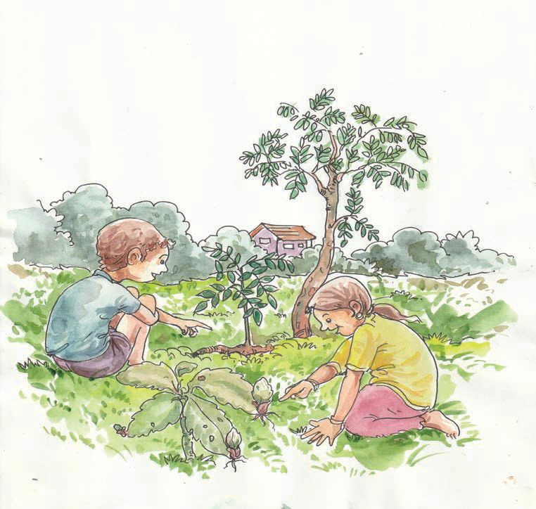<figcaption>Figure fig_ch01_p014_01 (Page 14)</figcaption></figure>
  <figure class="diagram-card" id="fig_ch01_p014_02"><figcaption>Figure fig_ch01_p014_02 (Page 14)</figcaption></figure>
  <figure class="diagram-card" id="fig_ch01_p014_03"><figcaption>Figure fig_ch01_p014_03 (Page 14)</figcaption></figure>
  <figure class="diagram-card" id="fig_ch01_p014_04"><figcaption>Figure fig_ch01_p014_04 (Page 14)</figcaption></figure>
  <figure class="diagram-card" id="fig_ch01_p014_05"><figcaption>Figure fig_ch01_p014_05 (Page 14)</figcaption></figure>
  <div class="page-content">
    <p>“›Ĺ›Æ†›ųƽš¡‚c ¡x}›sÇ</p>
    <p>h
s›¢“ƀ›¡ź
¢“Ž›Æ †›ųĬš
£‚s‘š›¡‚Ƽǰ
gŒ‘ă›¡}
£‚sÇ
g›Æ
†›ųš¢Ƽš
iĬšsų‚§</p>
    <p>ǗžÇ£z“£““› DZi„DZš†c “›ˆœ Ž
Ç
sŽ›Úų‚›†š›£–c
sžĞŽc¡xś¡xƠŽĹ›†›”šuۛ¢š–§ŒĹÄ Œš“§ŒƼ
s}ƃš“§‚}ā›“†}šÄ‚œŽŒš†›ă †}ų‹šuc e†–Ž›ă§
g“¡‚Žc‚›Ž›ă§ m’‚s q¢Žšg†Ĺ›c¡ˆĞsž}‚Æ
¡x}›sÇs¡Ĭś m’‚ž
Ç
“›Ĺ§</p>
    <p> ¢“Ž§</p>
    <p>z</p>
    <p>z</p>
    <p> sšįc</p>
    <p>z</p>
    <p>z</p>
    <p>g</p>
    <p>14</p>
  </div>
</section><section class="page-section" id="page-15">
  <div class="page-header"><span class="page-number">Page 15</span></div>
  <figure class="diagram-card" id="fig_ch01_p015_01">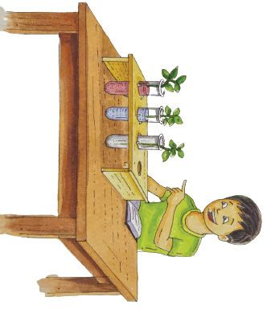<figcaption>Figure fig_ch01_p015_01 (Page 15)</figcaption></figure>
  <figure class="diagram-card" id="fig_ch01_p015_02"><figcaption>Figure fig_ch01_p015_02 (Page 15)</figcaption></figure>
  <figure class="diagram-card" id="fig_ch01_p015_03"><figcaption>Figure fig_ch01_p015_03 (Page 15)</figcaption></figure>
  <figure class="diagram-card" id="fig_ch01_p015_04"><figcaption>Figure fig_ch01_p015_04 (Page 15)</figcaption></figure>
  <div class="page-content">
    <p>––Dz‹šuā‘c Åƣā‘c
––DZś†§ mŦ›†š§ “›“› ‹šuāÇ?
mƼš‹šuāÇڝcƂš š†DZŒ›¢Ƽ?
Œžų§ ¡}ǡ§}DZžŠs¡‘}Ĺ§ǡšź›Æ“Ʃs pųšŒ¡Ĺ¡}ǡ§
}DZžŠ›Æ¡“ǫc†›ƩsŽĬšŒ¡Ĺ¡}ǡ§}DZžŠ›Æx“ƀŒ•›
¢xÅĹ¡“ǫc e¢‚e‘“›Æ †›Ʃs¡“ǫś¡źe‘“§
¢Žt¡ƀ}ĹsŒžųšŒ¡Ĺ¡}ǡ§}DZžŠ§zŒ›Ƽš¡‚“Ʃs
¢“Ž§¡ˆšĞ›¢ƀšsšĹ‚c
p¢Ž“ƀśǫ‚Œš
Œžų§ Œ•›ĹĬ¡x}›sÇ
m}Ĺ§ ˆĹŒ›†›Ǯ§
¡“›Ĺ§“ă‚›†¢”•c
¡}ǡ§}DZžŠs‘›¢Ʃ§ gÚ›
“Ʃs¡}ǡ§}DZžŠsÇ
–žŽDZƂsš”c‹›Úų
Ž
ǙĹ§“Ʃs
¡x}›sÇڝc¡}ǡ§}DZžŠ›¡
¡“ǫś†c iĬšsų ŒšǮādž›Žœä›Ús mŦ
ŒšǮŒš§sššÄs’›Ě‚§?
¡“ǫŒ›ƼšĹ¡}ǡ§}DZžŠ›¡¡x}›Ú§ mŦ –c‹“›ă?
sšŽ¡ŒŦš›Ž›Úc?
ŽĬšŒ¡Ĺ¡}ǡ§}DZžŠ›¡¡x}›¡}‚Ĭ›¡ź†›c
Œš›¡‚ā¡†? ‚
g‚›Æ¢“Ž›¡źˆ¡ÿŦ§?
s¡Ĭ՝sÇ ˆŽœäÚ›ƀš› m¡źˆŽ›–Žˆ~†
ˆǘsśÆ¢xÅڞx›Ņ“c“Žă¢xÅڞ
¡x}›sÇ e“Ʃš“”DZŒšf—šŽc†›Åƣ›Úų‚§
gs‘›š§ g‚§ e“¡}“‘ÅăƩš› iˆ¢šu›
ڝų ŠšÚ› “Žų f—šŽc ¡x}› e‚›¡ź
“›“› ‹šuā‘›š›sŽ‚›“Ʃų e‚§ŒǮzœ“zšāÇ
‹äŒš› iˆ¢ u
šu›Úų
15</p>
  </div>
</section><section class="page-section" id="page-16">
  <div class="page-header"><span class="page-number">Page 16</span></div>
  <figure class="diagram-card" id="fig_ch01_p016_01"><figcaption>Figure fig_ch01_p016_01 (Page 16)</figcaption></figure>
  <figure class="diagram-card" id="fig_ch01_p016_02"><figcaption>Figure fig_ch01_p016_02 (Page 16)</figcaption></figure>
  <div class="page-content">
    <p>“Žă¢šz›ƀ›Úž
‚Ĭ§</p>
    <p>––DZ¡Ĺ ŒĴ›Æ iƀ›ă †›Åŝų
–</p>
    <p>g</p>
    <p>ŒĴ›Æ†›ų§ ––DZś†§ f“”DZŒš
z“c¢ˆš•sā‘c“›¡ă}Úų</p>
    <p>¢“Ž§</p>
    <p>¢“Ž§“›¡ă}Úųz“c¢ˆš•sā‘c
gs‘›Æ Ĺ
mśڝų
––DZś†š“”DZŒšf—šŽc†›Åƣ›Úų</p>
    <p>gs‘¡} £““› Dzc
ǗžÇ£z“£““› DZ i„DZš†Ĺ›¡––DZāÇ †›Žœä›ă§ e“¡}
Ç
gs‘¡}–“›¢”•‚sÇ iÇ¡ƀ}Ĺ› ˆĞ›sˆžÅśšÚž
†ƠÅ
1</p>
    <p>––Dzc
‚Ơ</p>
    <p>fՂ›</p>
    <p>Œc</p>
    <p>†œĬ
sžÅł§</p>
    <p>ŒŒĬ§</p>
    <p>†›c
ˆă</p>
    <p>m¡ŦƼǰ“DZ‚DZš–ā‘š§s¡Ĭś‚§? m’‚›¢†šÚž
z†› Ĺ
Ĺ›Æ £““› DZŒĬ§
z
z</p>
    <p>gsÇ¢ˆƀ›†§ e}››Æ“㧠⢍šÃ–§ iˆ¢šu›ă§ ˆsÅś
Ç
g¡}¢Žtšx›ŅāÇ“ŽƩžˆš¢Ǯsdž›Žœä›Úž
16</p>
  </div>
</section><section class="page-section" id="page-17">
  <div class="page-header"><span class="page-number">Page 17</span></div>
  <figure class="diagram-card" id="fig_ch01_p017_01"><figcaption>Figure fig_ch01_p017_01 (Page 17)</figcaption></figure>
  <figure class="diagram-card" id="fig_ch01_p017_02"><figcaption>Figure fig_ch01_p017_02 (Page 17)</figcaption></figure>
  <figure class="diagram-card" id="fig_ch01_p017_03"><figcaption>Figure fig_ch01_p017_03 (Page 17)</figcaption></figure>
  <figure class="diagram-card" id="fig_ch01_p017_04">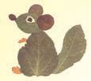<figcaption>Figure fig_ch01_p017_04 (Page 17)</figcaption></figure>
  <figure class="diagram-card" id="fig_ch01_p017_05">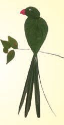<figcaption>Figure fig_ch01_p017_05 (Page 17)</figcaption></figure>
  <figure class="diagram-card" id="fig_ch01_p017_06"><figcaption>Figure fig_ch01_p017_06 (Page 17)</figcaption></figure>
  <figure class="diagram-card" id="fig_ch01_p017_07"><figcaption>Figure fig_ch01_p017_07 (Page 17)</figcaption></figure>
  <figure class="diagram-card" id="fig_ch01_p017_08"><figcaption>Figure fig_ch01_p017_08 (Page 17)</figcaption></figure>
  <figure class="diagram-card" id="fig_ch01_p017_09"><figcaption>Figure fig_ch01_p017_09 (Page 17)</figcaption></figure>
  <figure class="diagram-card" id="fig_ch01_p017_10"><figcaption>Figure fig_ch01_p017_10 (Page 17)</figcaption></figure>
  <figure class="diagram-card" id="fig_ch01_p017_11"><figcaption>Figure fig_ch01_p017_11 (Page 17)</figcaption></figure>
  <figure class="diagram-card" id="fig_ch01_p017_12"><figcaption>Figure fig_ch01_p017_12 (Page 17)</figcaption></figure>
  <figure class="diagram-card" id="fig_ch01_p017_13"><figcaption>Figure fig_ch01_p017_13 (Page 17)</figcaption></figure>
  <figure class="diagram-card" id="fig_ch01_p017_14"><figcaption>Figure fig_ch01_p017_14 (Page 17)</figcaption></figure>
  <figure class="diagram-card" id="fig_ch01_p017_15"><figcaption>Figure fig_ch01_p017_15 (Page 17)</figcaption></figure>
  <figure class="diagram-card" id="fig_ch01_p017_16"><figcaption>Figure fig_ch01_p017_16 (Page 17)</figcaption></figure>
  <div class="page-content">
    <p>gŽžˆāÇ
“›“› ‚Žc gsÇ
¡sšĬĬšÚ›
zœ“›s‘¡}ŽžˆāÇ
¢†šÚž g‚¢ˆš¡†ŒÚc
†›Åƣ›Úǰ</p>
    <p>ˆžÚ‘›¡ £““› Dzc
ˆžˆ›ÚŽ‚§ mų§
¡x}› ˆų¡‚Ŧ
¡sšĬš“ǰ?
ˆžÚÇ¡sšĬ§
fÅ¡ÚƼǰ m¡ŦƼǰ
Ƃ¢šz†ā‘Ĭ§ ?
m’‚ž</p>
    <p>m¡ź
ˆžÚÇ
ˆ›ÚŽ¢‚</p>
    <p>¢‚†œăƩ§ Ä
¢‚Đ‹›Úų</p>
    <p>z</p>
    <p>z
z</p>
    <p>ˆžÚLj“› c</p>
    <p>ST-253-2-EVS-3(M)VOL-1</p>
    <p>ŒƼƀž“§</p>
    <p>ˆĹŒ›ƀž“§
17</p>
  </div>
</section><section class="page-section" id="page-18">
  <div class="page-header"><span class="page-number">Page 18</span></div>
  <figure class="diagram-card" id="fig_ch01_p018_01"><figcaption>Figure fig_ch01_p018_01 (Page 18)</figcaption></figure>
  <figure class="diagram-card" id="fig_ch01_p018_02"><figcaption>Figure fig_ch01_p018_02 (Page 18)</figcaption></figure>
  <figure class="diagram-card" id="fig_ch01_p018_03"><figcaption>Figure fig_ch01_p018_03 (Page 18)</figcaption></figure>
  <figure class="diagram-card" id="fig_ch01_p018_04"><figcaption>Figure fig_ch01_p018_04 (Page 18)</figcaption></figure>
  <figure class="diagram-card" id="fig_ch01_p018_05">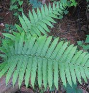<figcaption>Figure fig_ch01_p018_05 (Page 18)</figcaption></figure>
  <figure class="diagram-card" id="fig_ch01_p018_06"><figcaption>Figure fig_ch01_p018_06 (Page 18)</figcaption></figure>
  <figure class="diagram-card" id="fig_ch01_p018_07"><figcaption>Figure fig_ch01_p018_07 (Page 18)</figcaption></figure>
  <figure class="diagram-card" id="fig_ch01_p018_08">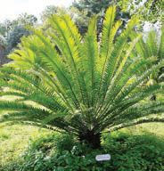<figcaption>Figure fig_ch01_p018_08 (Page 18)</figcaption></figure>
  <figure class="diagram-card" id="fig_ch01_p018_09"><figcaption>Figure fig_ch01_p018_09 (Page 18)</figcaption></figure>
  <figure class="diagram-card" id="fig_ch01_p018_10"><figcaption>Figure fig_ch01_p018_10 (Page 18)</figcaption></figure>
  <figure class="diagram-card" id="fig_ch01_p018_11"><figcaption>Figure fig_ch01_p018_11 (Page 18)</figcaption></figure>
  <figure class="diagram-card" id="fig_ch01_p018_12"><figcaption>Figure fig_ch01_p018_12 (Page 18)</figcaption></figure>
  <div class="page-content">
    <p>x›ŅĹ›Æ †Æs››Ž›Úų ˆžÚ‘¡}¢ˆŽsÇs¡Ĭś¡’‚ž
ŒĹ›c†›Ĺ›c fՂ››ŒƼš¡‚Œ¢Ǯ¡‚Ƽǰ‚ŽĹ›Æ
g““DZ‚DZš–¡ƀĞ›Ž›Úų?
sž}‚ƈžÚ¡‘†›Žœä›ă§ m¡ź
Æ
ˆŽ›–Žˆ~†ˆǘsĹ›Æ m’‚ž
Ž</p>
    <p>ˆžÚšĹ––Dzā‘c</p>
    <p>x›Ņśǫ –
––DZāÇ †›āÇsĬ›Ğ¢Ĭš?
g“ˆžÚų“š¢š?
mƼš¡x}›s‘cˆžÚų¢Ĭš? e¢†Ǵ•›ă›ž
––DZś¡źƂ †
š†‹šuāÇ¢“Ž§‚Ĭ§ gmų›“š§
––DZś¡ź“‘Å㍝¡}pŽ vĞśÆˆž“Ĭšsųˆž“§
ˆ›ųœ}§ sš§ f› Œšų mƼš ¡x}›s‘c ˆžÚų›Ƽ
mƼšˆžÚ‘csšš› ŒšųŒ›Ƽ
š</p>
    <p>zcs
“ǫǙā‘›Æ“‘Žų gŎc –
ǫ
––DZāÇ
sĬ›Ğ¢Ĭš mŦš§ g“¡}Ƃ¢‚DZs‚sÇ?
Ĭ</p>
    <p>†œÚ›Ě›
Ĭ“Å•Ĺ›Æ pŽ›ÚÆ
ŒšŅcˆǒ›Úų eˆžÅ“›†c
––DZcˆž“§ “›Ž›Ěs’›ĚšÆ
Œžų Œš–c“¡Ž“š}š¡‚
†›Æڝc†œu›Ž›sųsÇÚ§
f ¢ˆŽ“ŽšÄsšŽc
†œÚ›Ě›š§
18</p>
  </div>
</section><section class="page-section" id="page-19">
  <div class="page-header"><span class="page-number">Page 19</span></div>
  <figure class="diagram-card" id="fig_ch01_p019_01"><figcaption>Figure fig_ch01_p019_01 (Page 19)</figcaption></figure>
  <figure class="diagram-card" id="fig_ch01_p019_02">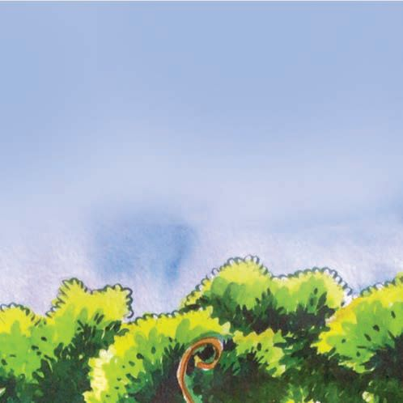<figcaption>Figure fig_ch01_p019_02 (Page 19)</figcaption></figure>
  <figure class="diagram-card" id="fig_ch01_p019_03"><figcaption>Figure fig_ch01_p019_03 (Page 19)</figcaption></figure>
  <figure class="diagram-card" id="fig_ch01_p019_04">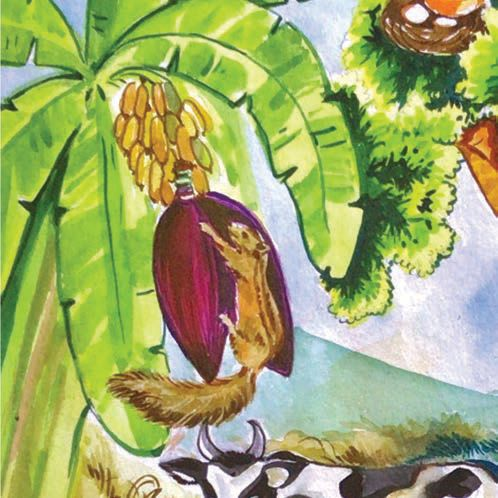<figcaption>Figure fig_ch01_p019_04 (Page 19)</figcaption></figure>
  <figure class="diagram-card" id="fig_ch01_p019_05"><figcaption>Figure fig_ch01_p019_05 (Page 19)</figcaption></figure>
  <figure class="diagram-card" id="fig_ch01_p019_06">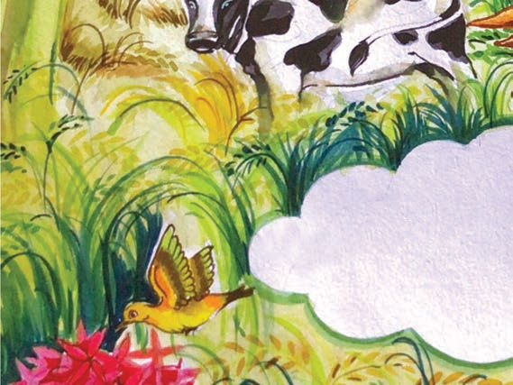<figcaption>Figure fig_ch01_p019_06 (Page 19)</figcaption></figure>
  <figure class="diagram-card" id="fig_ch01_p019_07">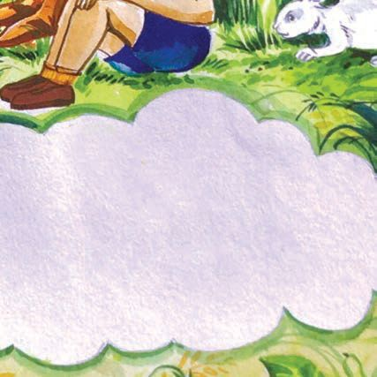<figcaption>Figure fig_ch01_p019_07 (Page 19)</figcaption></figure>
  <figure class="diagram-card" id="fig_ch01_p019_08"><figcaption>Figure fig_ch01_p019_08 (Page 19)</figcaption></figure>
  <figure class="diagram-card" id="fig_ch01_p019_09"><figcaption>Figure fig_ch01_p019_09 (Page 19)</figcaption></figure>
  <div class="page-content">
    <p>––DZāÇ ¡sšĬǫ Ƃ¢šz†āÇ m¡ŦƼǰ?
–
z ‚Æ †Æsų
z
z
z</p>
    <p>––DZāÇ“ăˆ›}›ƀ›ăc
–cŽä›ăc‹žŒ›¡—Ž›‚‹žŒ›š›
†›†›Å¢ĹĬ‚§ †ƣ¡}
q¢ŽšŽĹŽ¡}cs}Œ¢Ƽ?</p>
    <p>19</p>
  </div>
</section><section class="page-section" id="page-20">
  <div class="page-header"><span class="page-number">Page 20</span></div>
  <figure class="diagram-card" id="fig_ch01_p020_01"><figcaption>Figure fig_ch01_p020_01 (Page 20)</figcaption></figure>
  <figure class="diagram-card" id="fig_ch01_p020_02"><figcaption>Figure fig_ch01_p020_02 (Page 20)</figcaption></figure>
  <figure class="diagram-card" id="fig_ch01_p020_03"><figcaption>Figure fig_ch01_p020_03 (Page 20)</figcaption></figure>
  <figure class="diagram-card" id="fig_ch01_p020_04"><figcaption>Figure fig_ch01_p020_04 (Page 20)</figcaption></figure>
  <figure class="diagram-card" id="fig_ch01_p020_05"><figcaption>Figure fig_ch01_p020_05 (Page 20)</figcaption></figure>
  <figure class="diagram-card" id="fig_ch01_p020_06"><figcaption>Figure fig_ch01_p020_06 (Page 20)</figcaption></figure>
  <figure class="diagram-card" id="fig_ch01_p020_07"><figcaption>Figure fig_ch01_p020_07 (Page 20)</figcaption></figure>
  <figure class="diagram-card" id="fig_ch01_p020_08"><figcaption>Figure fig_ch01_p020_08 (Page 20)</figcaption></figure>
  <figure class="diagram-card" id="fig_ch01_p020_09"><figcaption>Figure fig_ch01_p020_09 (Page 20)</figcaption></figure>
  <figure class="diagram-card" id="fig_ch01_p020_10"><figcaption>Figure fig_ch01_p020_10 (Page 20)</figcaption></figure>
  <figure class="diagram-card" id="fig_ch01_p020_11"><figcaption>Figure fig_ch01_p020_11 (Page 20)</figcaption></figure>
  <figure class="diagram-card" id="fig_ch01_p020_12"><figcaption>Figure fig_ch01_p020_12 (Page 20)</figcaption></figure>
  <figure class="diagram-card" id="fig_ch01_p020_13">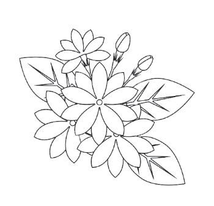<figcaption>Figure fig_ch01_p020_13 (Page 20)</figcaption></figure>
  <div class="page-content">
    <p>“››ŽĹDZ
1. ‚š¡’ ¡sš}Ĺ›Ž›Úų
––DZā‘¡} ¢ˆŽsÇ s¡Ĭś
–
e“n‚ “›‹šuĹ›Æ iÇ¡ƀ}ų¡“ų§ m’‚s.sž}‚Æ</p>
    <p>i„š—ŽāÇ s¡Ĭś e“ iÇ¡ƀ}ų “›‹šuś¡ź
Ƃ¢‚DZs‚s‘c m’‚s.</p>
    <p>2. ˆžÚÇÚ§ ix›‚Œš†›c †Æss</p>
    <p>†›āÇ h†›c¡‚Ž¡Ě}Ĺ‚§ mŦ¡sšĬš§? †
†›āÇڏ›
š“ųˆž¡ă}›s¡‘‚Žc‚›Ž›ă§ ˆĞ›sˆžÅśšÚž
20</p>
  </div>
</section><section class="page-section" id="page-21">
  <div class="page-header"><span class="page-number">Page 21</span></div>
  <figure class="diagram-card" id="fig_ch01_p021_01"><figcaption>Figure fig_ch01_p021_01 (Page 21)</figcaption></figure>
  <figure class="diagram-card" id="fig_ch01_p021_02"><figcaption>Figure fig_ch01_p021_02 (Page 21)</figcaption></figure>
  <div class="page-content">
    <p>pŽ†›Ĺ›ÆŒšŅc
ˆžÚ‘Ǭ¡x}›sÇ</p>
    <p>ˆ†›ā‘›Æ
†
ˆžÚ‘Ǭ¡x}›sÇ</p>
    <p>3. †›āÇ †Ğ“‘Åś¡x}› g¢ƀšÇ mŅ“‚š›?x›Ņc</p>
    <p>“Žă§ ‹šuāÇ e}š‘¡ƀ}Ĺs h ¡x}› †ŒÚc ŒǮ
zœ“zšāÇڝcmƂsšŽc Ƃ¢šz†¡ƀ}ų¡“ų§ m’‚s</p>
    <p>‚}ÅƂ“ÅņāÇ
1.</p>
    <p>ˆŽ›–ŽĹǫ n¡‚ÿ›c eĕ§ –
Ž
––DZāÇ s¡Ĭś‚š¡’
ˆų “›“ŽāÇ ¢xÅŧ —Ž›‚ښŧ†›Åƣ›Ús
––DZś¡ź¢ˆŽ§</p>
    <p>n‚ “›‹šuĹ›Æ iÇ¡ƀ}ų 
q• ›sǮ›¡ă}›ŒŽc
†}š†ˆ¢šu›Úų‹šuc</p>
    <p>g¡}Ƃ¢‚DZs‚sÇ</p>
    <p> ˆž“›¡źƂ¢‚DZs‚sÇ</p>
    <p> sšįś¡ź Ƃ¢‚DZs‚sÇ 
2.</p>
    <p>ˆ†› ‘
ā‘›ǫ ˆžÚ‘Ĭšsų ¡xƠŽĹ›¢š–§‚}ā›
¡x}›sÇsĬ›Ğ›¢Ƽ? p¢Ž ¡x}›¡}“DZ‚DZǘ g†ā‘š¢Ƽš
e“ gŎśǫ “DZ‚DZǘ g†c¡x}›sÇ£z“£““› DZ
i„DZš†Ĺ›Æ“ă ˆ
ˆ›}›ƀ›Ús</p>
    <p>21</p>
  </div>
</section><section class="page-section" id="page-22">
  <div class="page-header"><span class="page-number">Page 22</span></div>
  <figure class="diagram-card" id="fig_ch01_p022_01">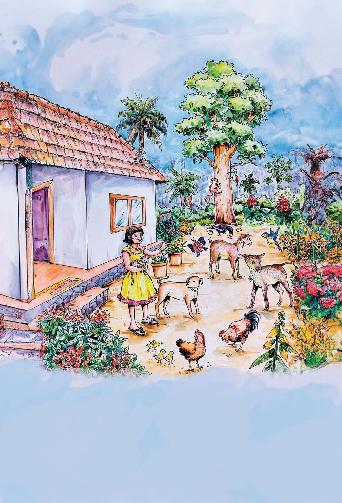<figcaption>Figure fig_ch01_p022_01 (Page 22)</figcaption></figure>
  <figure class="diagram-card" id="fig_ch01_p022_02"><figcaption>Figure fig_ch01_p022_02 (Page 22)</figcaption></figure>
  <figure class="diagram-card" id="fig_ch01_p022_03">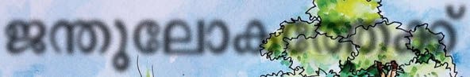<figcaption>Figure fig_ch01_p022_03 (Page 22)</figcaption></figure>
  <figure class="diagram-card" id="fig_ch01_p022_04"><figcaption>Figure fig_ch01_p022_04 (Page 22)</figcaption></figure>
  <figure class="diagram-card" id="fig_ch01_p022_05"><figcaption>Figure fig_ch01_p022_05 (Page 22)</figcaption></figure>
  <figure class="diagram-card" id="fig_ch01_p022_06"><figcaption>Figure fig_ch01_p022_06 (Page 22)</figcaption></figure>
  <figure class="diagram-card" id="fig_ch01_p022_07"><figcaption>Figure fig_ch01_p022_07 (Page 22)</figcaption></figure>
  <figure class="diagram-card" id="fig_ch01_p022_08"><figcaption>Figure fig_ch01_p022_08 (Page 22)</figcaption></figure>
  <figure class="diagram-card" id="fig_ch01_p022_09"><figcaption>Figure fig_ch01_p022_09 (Page 22)</figcaption></figure>
  <div class="page-content">
    <p>2</p>
    <p>zŦ¢šs¢ĹÚ§</p>
    <p>Ïf—šgų§mƼš“Žc“‘¡Ž¢†Ž¢Ĺmś¢ƼšÐ
sžĞsš¡ŽÚĬ§Œ›Ņ“œ}›†ˆĹ›ā›
Œ›Ņ¡} “œĞ Ž
ˆŽ›–ŽcsĬ¢Ƽš
n¡‚Ƽǰzœ“›s‘š§x›Ņśǫ‚§?
g“›ÆŒ›Ņ“‘Åŝųzœ“›s¢‘¡‚š¡Úš“c#
n¡‚š¡Úzœ“›s¡‘š§Œ†•DZÅgÚ›“‘Åŝų‚§?</p>
  </div>
</section><section class="page-section" id="page-23">
  <div class="page-header"><span class="page-number">Page 23</span></div>
  <figure class="diagram-card" id="fig_ch01_p023_01"><figcaption>Figure fig_ch01_p023_01 (Page 23)</figcaption></figure>
  <figure class="diagram-card" id="fig_ch01_p023_02"><figcaption>Figure fig_ch01_p023_02 (Page 23)</figcaption></figure>
  <figure class="diagram-card" id="fig_ch01_p023_03"><figcaption>Figure fig_ch01_p023_03 (Page 23)</figcaption></figure>
  <figure class="diagram-card" id="fig_ch01_p023_04"><figcaption>Figure fig_ch01_p023_04 (Page 23)</figcaption></figure>
  <figure class="diagram-card" id="fig_ch01_p023_05">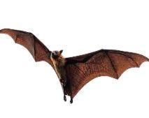<figcaption>Figure fig_ch01_p023_05 (Page 23)</figcaption></figure>
  <figure class="diagram-card" id="fig_ch01_p023_06"><figcaption>Figure fig_ch01_p023_06 (Page 23)</figcaption></figure>
  <figure class="diagram-card" id="fig_ch01_p023_07"><figcaption>Figure fig_ch01_p023_07 (Page 23)</figcaption></figure>
  <figure class="diagram-card" id="fig_ch01_p023_08"><figcaption>Figure fig_ch01_p023_08 (Page 23)</figcaption></figure>
  <figure class="diagram-card" id="fig_ch01_p023_09">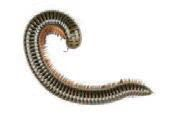<figcaption>Figure fig_ch01_p023_09 (Page 23)</figcaption></figure>
  <figure class="diagram-card" id="fig_ch01_p023_10"><figcaption>Figure fig_ch01_p023_10 (Page 23)</figcaption></figure>
  <div class="page-content">
    <p>mŦ›¡†š¡Ú ¢“Ĭ›š§ †ǰzœ“›s¡‘“‘Åŝų‚§?
z
f—šŽĹ›†§
z –ŽäƩ§
z
z</p>
    <p>†ŒÚ§“‘Åŝzœ“›s¡‘ ¡sšĬǫƂ¢šz†ā‘Œš›ŠŰ¡ƀĞ
ˆĞ›s ˆžÅśšÚž
zœ“›</p>
    <p>Ƃ¢šz†āÇ</p>
    <p>Ñf}§
Ñ¢sš’›
•
•
•
•
“›“› f“”DZāÇښ›†ǰzœ“›s¡‘“‘Åŝųx›
zœ“›s‘¡} ˆšÆŒĞŒǰ–c‚}ā›“f—šŽĹ›†ˆ¢š
u›Úų s‚sś
†¢“Ĭ›“‘Åŝųzœ“›s‘ŒĬ§
Ĭ</p>
    <p>mŅ¡Ņzœ“›sÇ
x›Ņśǫn¡‚Ƽǰzœ“›s¡‘ †›āÇڏ›ǰ ?
¢ˆŽsÇm’‚ž</p>
    <p>ˆƼ›</p>
    <p>23</p>
  </div>
</section><section class="page-section" id="page-24">
  <div class="page-header"><span class="page-number">Page 24</span></div>
  <figure class="diagram-card" id="fig_ch01_p024_01"><figcaption>Figure fig_ch01_p024_01 (Page 24)</figcaption></figure>
  <figure class="diagram-card" id="fig_ch01_p024_02"><figcaption>Figure fig_ch01_p024_02 (Page 24)</figcaption></figure>
  <figure class="diagram-card" id="fig_ch01_p024_03">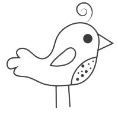<figcaption>Figure fig_ch01_p024_03 (Page 24)</figcaption></figure>
  <figure class="diagram-card" id="fig_ch01_p024_04">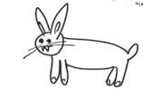<figcaption>Figure fig_ch01_p024_04 (Page 24)</figcaption></figure>
  <figure class="diagram-card" id="fig_ch01_p024_05">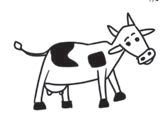<figcaption>Figure fig_ch01_p024_05 (Page 24)</figcaption></figure>
  <figure class="diagram-card" id="fig_ch01_p024_06">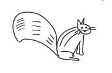<figcaption>Figure fig_ch01_p024_06 (Page 24)</figcaption></figure>
  <figure class="diagram-card" id="fig_ch01_p024_07"><figcaption>Figure fig_ch01_p024_07 (Page 24)</figcaption></figure>
  <figure class="diagram-card" id="fig_ch01_p024_08">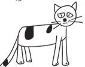<figcaption>Figure fig_ch01_p024_08 (Page 24)</figcaption></figure>
  <div class="page-content">
    <p>g“†ƣ¡} “œĞ›c Ž
ˆŽ›–ŽĹŒš›zœ“›Úų“š¢Ƽš
g“›Æ“‘Åŝzœ“›s‘¢Ĭš?

“œĞ›c Ž
ˆŽ›–ŽĹŒǫ sž}‚Æ zœ“›s¡‘ s¡Ĭś m¡ź
ˆŽ›–Žˆ~†ˆǘsśÆm’‚ž
Ž
mŅzœ“›s¡‘ s¡ĬŚÄs’›Ě?
†›ā‘¡} sžĞsšÅ¢Úš?</p>
    <p>gśŽ›ÚĚŶšŽc“ƠŶšŽc
Œ›ŅcsžĞŽczœ“›s‘¡} ¢ˆŽˆĚ s‘›Úsš§
ÏfŽš§ nǮ“c sž}‚Æ zœ“›s¡‘ s¡Ĭŝs?Ð ƣ
‚ƣ›Æ
ŒŇŽŒš›
ψÆăš}›Œ›ųšŒ›†ā§qŦ§“Ĭ§ ˆ”Ð
ˆĚ zœ“›s‘¡} x›Ņc“ŽƩš†ce“ÅŒų›Ƽ</p>
    <p>Œ›Ņ“Žăzœ“›s‘¡}x›ŅāÇsĬ¢Ƽš
†ŒÚcg‚¢ˆš¡ ‘
s‘›ăš¢š?
¢ˆŽ ˆš¡‚zœ“›s‘¡} ”ƒ¢Œš x†¢Œše“‚Ž›ƀ›Úž
sžĞsšÅzœ“›¡ ‚›Ž› 
㏛¡Ğ
s¡Ĭśzœ“›s‘¡} ¢ˆŽsLjЛs¡ƀ}Ĺ›x›Ņc“Žă§
†›“c †Æsž
24</p>
  </div>
</section><section class="page-section" id="page-25">
  <div class="page-header"><span class="page-number">Page 25</span></div>
  <figure class="diagram-card" id="fig_ch01_p025_01"><figcaption>Figure fig_ch01_p025_01 (Page 25)</figcaption></figure>
  <figure class="diagram-card" id="fig_ch01_p025_02"><figcaption>Figure fig_ch01_p025_02 (Page 25)</figcaption></figure>
  <div class="page-content">
    <p>†›ā‘¡} ˆĞ›s›¡nǮ“c
¡x›zœ“›¢‚š§?

nǮ“c“¢‚š?
ˆĞ›s›¡ zœ“›s¡‘
“ƀś¡ź e}›Ǚš†
śÆ⌜sŽ›¡ă’‚ž
xǮˆš}Œǫ ¡xzœ“›s¡‘
†›āÇNJŗ›ă›Ğ¢Ĭš?</p>
    <p>eäŽă›ŅāÇ“ŽƩDZ</p>
    <p>g‚¢ˆš¡
sž}‚Æx›ŅāÇ
“Žă¢†šÚž</p>
    <p>†ƣ¡} “›„DZšˆŽ›–ŽĹŒĬš“›¢Ƽe¢†sc ¡xzœ“›sÇ?
g“ n¡‚Ƽǰ? g“¡ƩƼǰ p¢Ž “ƀŒš¢š? †ŒÚ§ sžĞš›
†›Žœä›ăš¢š? †›ŽœäĹ›†§—šÄ§¡Ä–§sž}›iˆ¢šu
¡ƀ}Ĺ¢
m“›¡}¡Ƽǰ †›Žœä›Úǰ?
 ŒĴ›Æ</p>
    <p>z</p>
    <p> ¡x}›s‘›Æ</p>
    <p>z
z
z
z</p>
    <p>s¡Ĭś¡xzœ“›s‘¡} ¢ˆŽsÇm¡źˆŽ›–Žˆ~†ˆǘs
śÆm’‚ž
25</p>
  </div>
</section><section class="page-section" id="page-26">
  <div class="page-header"><span class="page-number">Page 26</span></div>
  <figure class="diagram-card" id="fig_ch01_p026_01"><figcaption>Figure fig_ch01_p026_01 (Page 26)</figcaption></figure>
  <figure class="diagram-card" id="fig_ch01_p026_02"><figcaption>Figure fig_ch01_p026_02 (Page 26)</figcaption></figure>
  <figure class="diagram-card" id="fig_ch01_p026_03"><figcaption>Figure fig_ch01_p026_03 (Page 26)</figcaption></figure>
  <figure class="diagram-card" id="fig_ch01_p026_04"><figcaption>Figure fig_ch01_p026_04 (Page 26)</figcaption></figure>
  <figure class="diagram-card" id="fig_ch01_p026_05"><figcaption>Figure fig_ch01_p026_05 (Page 26)</figcaption></figure>
  <figure class="diagram-card" id="fig_ch01_p026_06"><figcaption>Figure fig_ch01_p026_06 (Page 26)</figcaption></figure>
  <figure class="diagram-card" id="fig_ch01_p026_07"><figcaption>Figure fig_ch01_p026_07 (Page 26)</figcaption></figure>
  <div class="page-content">
    <p>“›ŽÆx›ŅāÇ
Œ•››Æ Ú
ŒÚ› “›ŽsÇ
s}š–›Æ ˆ‚› ƀ› 㧠 “ Žă
zœ“›s‘¡} x›ŅāÇ ¢†šÚž
g‚¢ˆš¡ sž}‚Æzœ“›s‘¡}
x›ŅāÇ“ŽƩž</p>
    <p>–“›¢”•‚s‘›¡£““› Dzc
‚š¡’ †Æs››Ž›Úų ”ŽœŽ‹šuāÇn¡‚Ƽǰzœ“›s‘¢}¡‚ų§
s¡Ĭś¡’‚ž</p>
    <p>n¡‚Ƽǰ “› śš§g““DZ‚DZš–¡ƀĞ›Ž›Úų‚§?
 †›c</p>
    <p>z</p>
    <p> ˆǫ›sÇ</p>
    <p>z
z</p>
    <p>†›c sĬ§‚›Ž›ă›šÄs’›ųzœ“›s‘¢Ĭš?
¡sšƠ sĬšÆ‚›Ž›ă›šÄs’›ųzœ“›s¢‘¡‚š¡Ú?
ˆǫ›sÇsĬš¢š?
fՂ››c “ƀśc †›Ĺ›c ¡sšƠ§ †tc
ˆǫ›sÇ “ŽsÇ ‚}ā› –“›¢”•‚s‘›c q¢Žš
zœ“›c “DZ‚DZǘ‚ˆÅŝų
26</p>
  </div>
</section>
    </main>
    <footer>
      <div class="nav-bar"><span class="nav-bar disabled"></span><a href="index.html">☰ Index</a><a href="part_1_chapter_02.html">Chapter 2 (Pages 27-46) →</a></div>
      <p style="text-align: center; font-size: 0.85rem; color: var(--text-muted); margin-top: 2rem;">
        Kerala SCERT Class 3 Basic_science (Malayalam Medium) - Extracted Study Text
      </p>
    </footer>
  </div>
</body>
</html>
